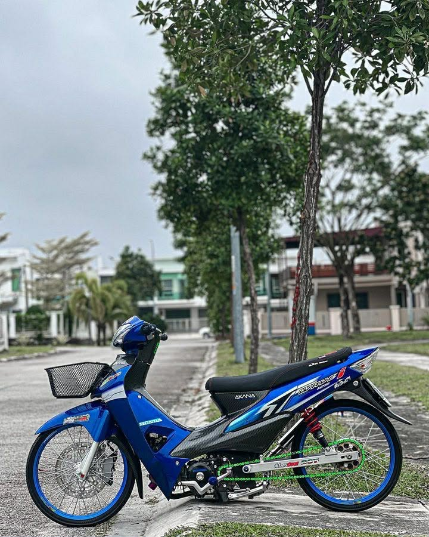

The Honda Wave, also marketed as the Honda NF series (codename), Honda Innova in Europe, and Honda Supra in Indonesia, is a series of motorcycles manufactured by Honda that debuted in 1995 with an underbone design, having separate cosmetic plastic body panels over a structural steel tube chassis. The Wave series succeeds the Super Cub which used pressed steel frame acting as both the structural chassis and cosmetic bodywork. It serves as the Southeast Asian model of the historic Honda Cub.